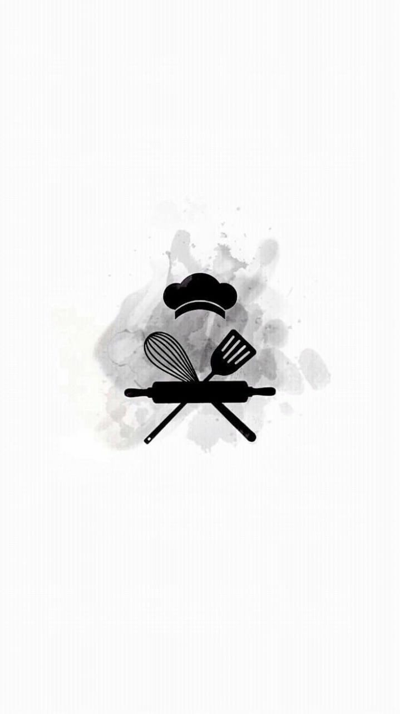
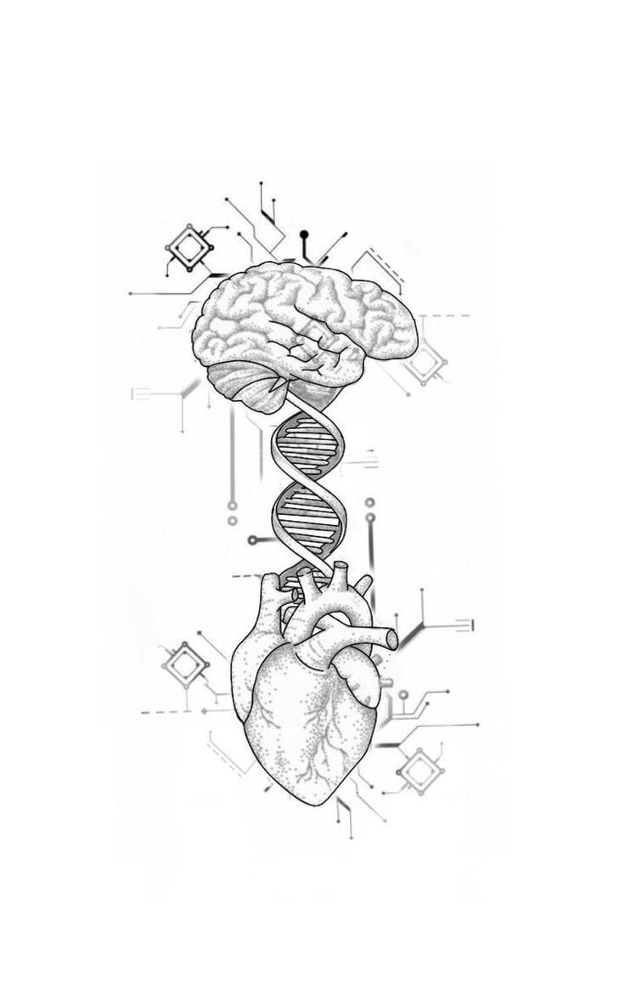
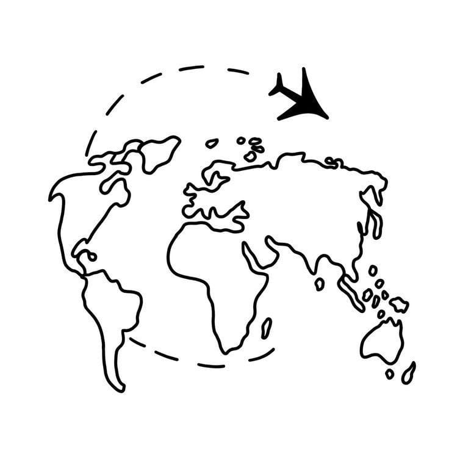

"Uniones Academicas"
"Descubre, aprende, crece: en la cocina, en la mente y en el mundo"
Descripcion: El objetivo de la página web es proporcionar <
información y recursos a estudiantes interesados en las carreras de Gastro
Psicología y Turismo, con el fin de ayudarles a tomar decisiones clarasSeleccione el titulo de la carrera que le llame la atencion<
   Mision:Proporcionar información precisa sobre carreras universitarias para
toma de decisiones Vision:Ser la plataforma líder en información y recursos para estudiantes
experiencias personalizadas y oportunidades de empleo
"Gastronomia"
"Psicologia"
"Turismo"